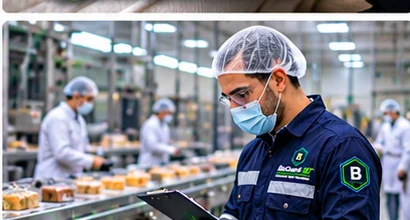

Évaluer
Comprendre le problème, les zones exposées et vos priorités.
BIOGUARD 3D · Industries agroalimentaires
Une démarche de prévention et de suivi documenté adaptée aux zones de production, aux flux logistiques et aux exigences internes de votre site.
Basés à Rabat · Déplacements partout au Maroc selon faisabilité

Notre approche
Chaque lieu a ses contraintes. Notre équipe technique évalue les besoins avant de proposer la méthode adaptée.
Comprendre le problème, les zones exposées et vos priorités.
Définir une intervention ciblée et communiquer les consignes utiles.
Partager les recommandations et organiser le suivi lorsque nécessaire.
Pour les professionnels
Pour les établissements professionnels, les documents d’intervention et les modalités de suivi sont définis selon la prestation convenue. Une attestation de passage peut être remise pour un passage réellement effectué, avec des informations exactes sur l’intervention.
Découvrir nos solutions professionnelles →Indiquez votre ville, votre type de local et le problème rencontré. Nous vous orienterons vers la suite adaptée.
☎ 06 75 31 13 17Envoyer un e-mailPrévention ciblée
Évaluer les accès, les matières premières et les indices de présence de rongeurs ou insectes.
Découvrir notre approche →Adapter les méthodes aux contraintes du procédé, aux zones sensibles et aux consignes de sécurité alimentaire.
Découvrir notre approche →Définir avec le client les points à surveiller, les observations à consigner et les actions correctives.
Découvrir notre approche →Le programme dépend du plan du site, des flux, des risques et des exigences documentaires convenues avec le responsable qualité. Les modalités d’intervention sont définies après évaluation.
Étudier un contrat de maintenanceSelon la prestation convenue : comptes rendus, attestations des passages réalisés, observations et recommandations. Ces éléments peuvent contribuer à votre démarche de maîtrise des risques, sans constituer une certification HACCP ou ONSSA.
Qualité et traçabilité →Le devis tient compte de la surface, des zones sensibles, des risques et de la fréquence des passages.
Les créneaux, mesures de protection et conditions de réoccupation sont convenus selon la méthode et les contraintes de production.
Indiquez votre ville, votre activité, la surface approximative et vos besoins de prévention ou de traitement.